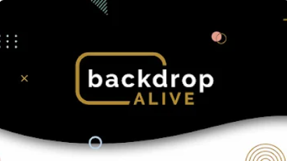
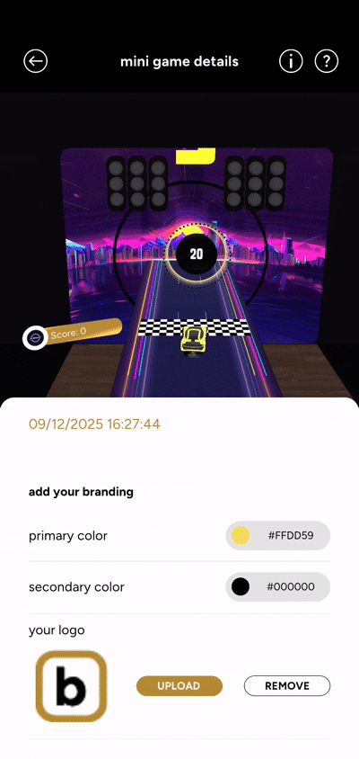
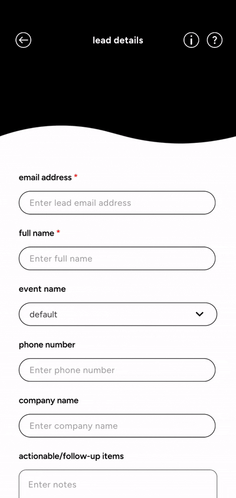
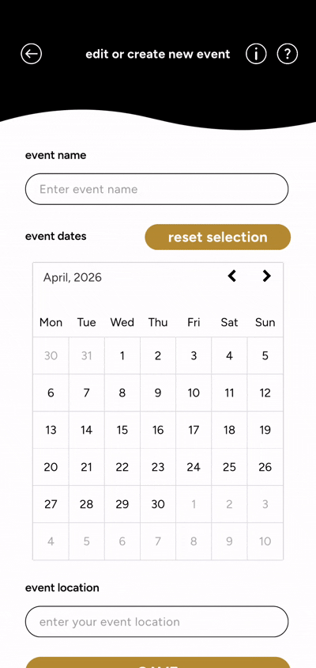
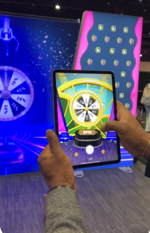

 >
Description from the store: "Backdrop Alive is the official companion app for AR-enabled backdrops from Backdrop.com and TradeShowBooth.com. Designed for trade shows, retail activations, and live events, the app transforms static displays into dynamic, interactive experiences that attract attention and drive engagement. With a quick scan, attendees can unlock animations, play branded mini-games, and receive custom rewards such as discounts, samples, or other gifts—making your booth both memorable and shareable.
Beyond audience interaction, Backdrop Alive helps brands capture leads effortlessly. Each scan is linked to a specific backdrop and event, allowing for detailed tracking and performance analysis. Built-in analytics offer insight into engagement metrics, helping you measure success and optimize your displays over time. The app also includes access to a growing AR game library, giving you more ways to engage your audience and drive real-time participation."
iOS, Android
C#
Unity, ARFoundation, in app purchases, MySQL
Dec 2024 - March 2026
>
Description from the store: "Backdrop Alive is the official companion app for AR-enabled backdrops from Backdrop.com and TradeShowBooth.com. Designed for trade shows, retail activations, and live events, the app transforms static displays into dynamic, interactive experiences that attract attention and drive engagement. With a quick scan, attendees can unlock animations, play branded mini-games, and receive custom rewards such as discounts, samples, or other gifts—making your booth both memorable and shareable.
Beyond audience interaction, Backdrop Alive helps brands capture leads effortlessly. Each scan is linked to a specific backdrop and event, allowing for detailed tracking and performance analysis. Built-in analytics offer insight into engagement metrics, helping you measure success and optimize your displays over time. The app also includes access to a growing AR game library, giving you more ways to engage your audience and drive real-time participation."
iOS, Android
C#
Unity, ARFoundation, in app purchases, MySQL
Dec 2024 - March 2026

I set up a place where user caan create a new lead, edit the leads, name, notes, image and priority. The user can archive, delete and read the leads.
In addition to the lead. It is also important for user to know which event they found the lead in. User can create an event and choose the date by interacting with a calendar, edit the name of the event and choose a location. They can also archive, delete and read the event as well.
Due to proprietary reasons, I cannot share the actual scanning part, but you can visit the website to see an example. Below is a screenshot (from companies website) of a representative showing an example of a prize wheel coming alive when scanning a backdrop at a tradeshow. All other content shared above are eitheralready public on the app stores or websites.